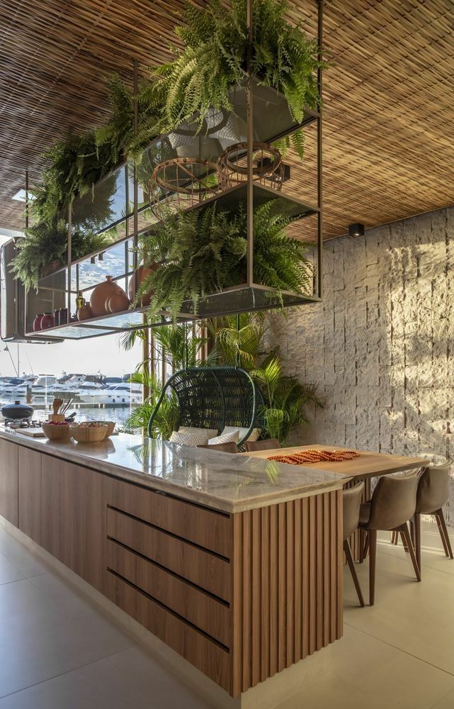

Estudio B+F

SOMOS UN ESTUDIO DE ARQUITECTURA INTERDISCIPLINARIO EN EL QUE REPENSAMOS NUESTRO SISTEMA, LOS ESPACIOS URBANOS EN SI MISMOS Y SU RELACION CON LA NATURALEZA
Nuestros proyectos son piezas sofisticadas, con una gran tecnología y diseño para ser funcionales a un contexto más amplio: un modo de vida que posibilita muchas relaciones. Enfocados en el diseño, buscamos potenciar su sentido transformador Nuestro objetivo es concebir una Arquitectura en diálogo con la naturaleza en el mundo de hoy.